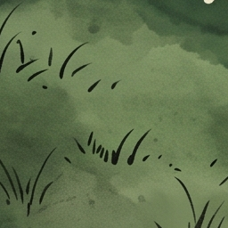
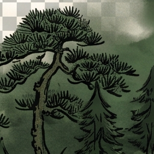
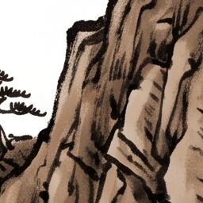
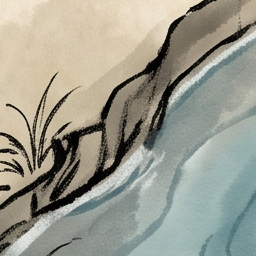
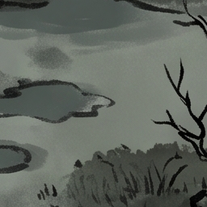
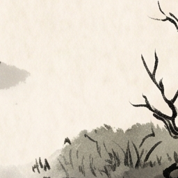
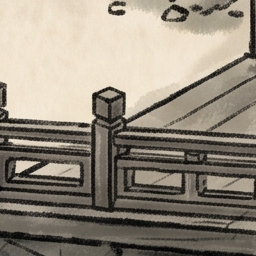
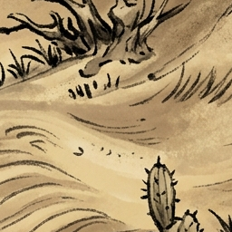

🎨 地形Tile快速预览
快速方案推荐的每种地形最佳tile（坐标02_02，中心区域）

平原
坐标: 02_02
66个tile之一

森林
坐标: 02_02
66个tile之一

山地
坐标: 02_02
64个tile之一

河流
坐标: 02_02
64个tile之一

湿地
坐标: 02_02
64个tile之一

道路
坐标: 02_02
64个tile之一

桥梁
坐标: 02_02
64个tile之一

沙漠
坐标: 02_02
16个tile之一
📐 平铺效果测试（平原示例）
测试说明：
✅ 3×3网格平铺测试
✅ 使用同一tile（平原_02_02）
✅ 观察边缘衔接效果
✅ 检查无缝平铺性
💡 如果边缘衔接自然，说明tile质量良好
📋 快速方案优势
- ✅ 瞬时完成 - 无需复杂计算，立即得到结果
- ✅ 中心位置 - 选择坐标02_02区域，避免边缘裁剪
- ✅ 细节丰富 - 中心区域通常纹理更完整
- ✅ 质量稳定 - 避开边界问题区域
- ✅ 易于理解 - 基于位置而非复杂算法
🎯 使用建议
- 先用快速方案查看效果
- 在测试场景中验证平铺无缝性
- 如果有问题，可尝试备选tile（如03_03）
- 等待复杂分析脚本完成后对比结果